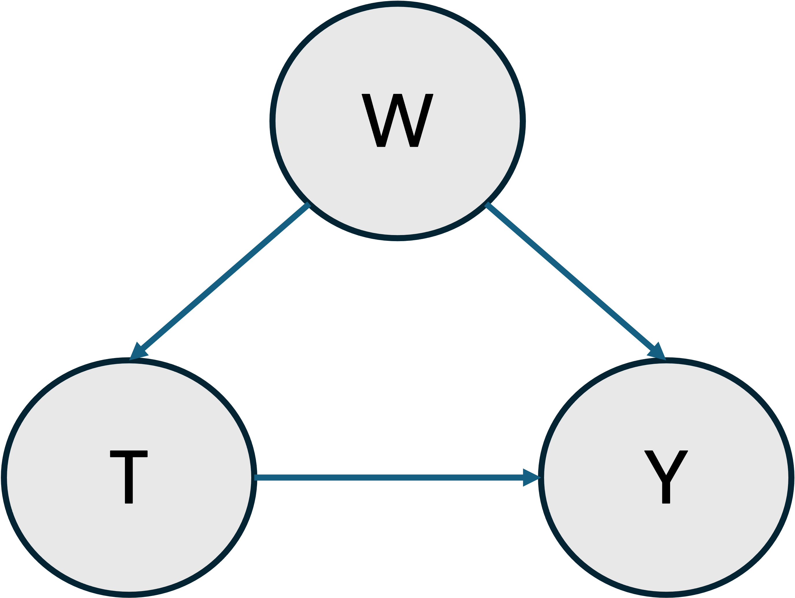

Case–Control Design and Biased Sampling
In this example we aim to present a strategy for estimating causal parameters in experiments with biased sampling designs. The most well-known of these designs in practice is the case-control study. Unfortunately, this bias in the sampling mechanism will result in a systematic bias in the associated causal effects. However, the TMLE framework provides a way to adjust for this bias. The main requirement for this adjustment is knowledge of the true population prevalence of the outcome ($q_0$). In TMLE.jl, this can be provided to the Tmle estimator via the prevalence keyword argument. We will call the resulting estimator the CCW-TMLE.
Data Generating Process
Let's consider the following structural causal model for our data generating distribution $P₀$, in which there are no unobserved counfounders.

Let's assume the following generating process where the set of confounders W is a binary random variable, T is a binary treatment variable dependent on W and Y is the binary outcome dependent on both T and W.
\[\begin{aligned} W \sim \mathcal{Bernoulli}(0.5) \\ T \sim \mathcal{B}(\frac{1}{1 + e^{0.2 - 0.8\cdot W}}) \\ Y \sim \mathcal{B}(\frac{1}{1 + e^{3.0 - log(2.0)\cdot T - log(1.5)\cdot W}}) \end{aligned}\]
And here the observations drawn from $P_0$ are denoted as $O = (W, T, Y)$.
using Random
using DataFrames
using Distributions
using Statistics
using MLJBase
using CategoricalArrays
using CairoMakie
using TMLE
α, β, γ = -3.0, log(2.0), log(1.5)
pA_given_W(w) = 1 / (1 + exp(-(-0.2 + 0.8*w)))
pY_given_A_W(t, w) = 1 / (1 + exp(-(α + β*t + γ*w)))
function generate_population(;n=2_000_000)
W = rand(Bernoulli(0.5), n)
A = [rand(Bernoulli(pA_given_W(w))) for w in W]
Y = [rand(Bernoulli(pY_given_A_W(a, w))) for (a, w) in zip(A, W)]
return DataFrame(W=W, A=A, Y=Y)
end
Random.seed!(42)
pop = generate_population()
first(pop, 5)| Row | W | A | Y |
|---|---|---|---|
| Bool | Bool | Bool | |
| 1 | false | false | false |
| 2 | true | false | true |
| 3 | true | true | false |
| 4 | false | true | false |
| 5 | false | false | false |
Sampling Bias
We then define a biased sampling strategy to simulate a case-control study with case (Y = 1) prevalence of a specified q. As a consequence of this sampling design our observed data distribution P will not be equal to the true population distribution P₀. Instead our experimental unit or set of observations will be represented by the following form: $O = ((W_1, A_1), (W^{j}_0, A^{j}_0):j=1...J) \sim P_0$, where $(W_1, A_1) \sim P₀|Y=1$ and $(W^{j}_0, A^{j}_0) \sim P₀|Y=0$.
function subsample_case_control(
pop::DataFrame,
q::Float64;
n::Int = 100_000,
outcome_col::Symbol = :Y,
rng::AbstractRNG = Random.GLOBAL_RNG,
)
n_case = round(Int, q * n)
n_ctl = n - n_case
y = pop[!, outcome_col]
case_idx = findall(y .== 1)
ctl_idx = findall(y .== 0)
sel_cases = shuffle(rng, case_idx)[1:n_case]
sel_ctls = shuffle(rng, ctl_idx)[1:n_ctl]
sample = pop[vcat(sel_cases, sel_ctls), :]
sample.A = categorical(sample.A)
sample.Y = categorical(sample.Y)
return sample
end
subsample_case_control(pop, 0.1; n = 5)| Row | W | A | Y |
|---|---|---|---|
| Bool | Cat… | Cat… | |
| 1 | false | false | false |
| 2 | true | false | false |
| 3 | false | true | false |
| 4 | false | true | false |
| 5 | false | true | false |
We define a function to estimate the ATE using both the canonical TMLE and CCW-TMLE from the biased sample. Here, the CCW-TMLE is provided with the true population prevalence q₀. With this information, the CCW-TMLE can reconstruct the true population structure in the presence of biased sampling allowing for the estimation of the true population ATE. On the other hand, the canonical TMLE will estimate an ATE that is dependent on the observed population with a biased sturcture.
function estimate_Ψ(sample::DataFrame, q0::Float64)
Ψ = ATE(
outcome = :Y,
treatment_values = (A=(case=1, control=0),),
treatment_confounders = (A=[:W],)
)
canonical_tmle = Tmle(weighted=false)
ccw_tmle = Tmle(prevalence=q0, weighted=false)
canon_estimate, _ = canonical_tmle(Ψ, sample; verbosity=0)
ccw_estimate, _ = ccw_tmle(Ψ, sample; verbosity=0)
return canon_estimate, ccw_estimate
endestimate_Ψ (generic function with 1 method)CCW–TMLE vs Canonical TMLE in the Presence of Sampling Bias
To illustrate, we select various levels of case-control prevalences q and compare the estimates from both the canonical TMLE and CCW-TMLE. Because we know the true generating process and population, both the true causal effect and prevalence are known.
q₀ = mean(pop.Y)
W = pop.W
π1 = pY_given_A_W.(1, W)
π0 = pY_given_A_W.(0, W)
true_RD = mean(π1 .- π0)0.0517906420413842The following code performs the following operations:
- For each prevalence
q, it generates a case-control subsample and estimates the average treatment effect with both the classic TMLE and CCW-TMLE. - It plots the estimation results.
function ribbon!(ax, x, y, ylow, yhigh; color, label=nothing)
band!(ax, x, ylow, yhigh, color=(color, 0.25))
lines!(ax, x, y, color=color, label=label, linewidth=2)
end
function sampling_bias_analysis(
pop::DataFrame,
n::Int,
sampling_range::Tuple{Float64,Float64},
n_studies::Int,
q0::Float64,
true_Ψ::Float64;
rng=Random.GLOBAL_RNG
)
q_min, q_max = sampling_range
qs = exp.(range(log(q_min), log(q_max), length=n_studies))
results = DataFrame(q=Float64[],
method=String[],
estimate=Float64[],
lower=Float64[],
upper=Float64[])
for q in qs
sample = subsample_case_control(pop, q; n=n, rng=rng)
est_plain, est_ccw = estimate_Ψ(sample, q0)
ci_plain = confint(significance_test(est_plain))
ci_ccw = confint(significance_test(est_ccw))
push!(results, (q, "TMLE", est_plain.estimate, ci_plain[1], ci_plain[2]))
push!(results, (q, "CCW–TMLE", est_ccw.estimate, ci_ccw[1], ci_ccw[2]))
end
fig = Figure(resolution=(800,500))
ax = Axis(fig[1,1], title="Sampling Bias: Standard vs CCW–TMLE",
xlabel="Sampling prevalence q",
ylabel="ATE (risk difference)")
df_plain = filter(:method => ==("TMLE"), results)
ribbon!(ax, df_plain.q, df_plain.estimate, df_plain.lower, df_plain.upper;
color=:dodgerblue, label="Standard TMLE")
df_ccw = filter(:method => ==("CCW–TMLE"), results)
ribbon!(ax, df_ccw.q, df_ccw.estimate, df_ccw.lower, df_ccw.upper;
color=:orange, label="CCW–TMLE")
hlines!(ax, [true_Ψ], color=:black, linestyle=:dash, label="True ATE")
vlines!(ax, [q0], color=:red, linestyle=:dot, label="True q₀")
axislegend(ax, position=:rb)
return results, fig
end
results, figure = sampling_bias_analysis(pop, 100_000, (0.01, 0.5), 8, q₀, true_RD)
figureInterpretation:
- Standard TMLE estimates drift as sampling prevalence deviates from q₀ because the empirical distribution over- or under-represents cases.
- CCW–TMLE with the true q₀ remains stable across sampling prevalences.
This demonstrates how by supplying the true population prevalence we can recover the true population structure in biased (case–control) sampling designs allowing for the estimation of population parameters that are otherwise sampling dependent.
This page was generated using Literate.jl.